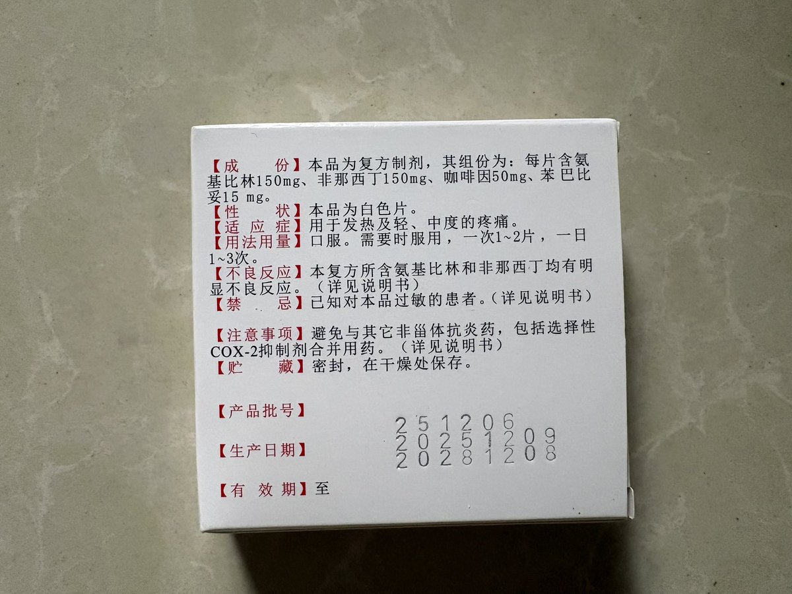

麦片
@maipianaini0930
@Jy666992 巴比妥？？？很危险的东西

烨篮子（半智障版）
@Jy666992
有一说一，这个我偶然遇到买的，看配方感觉没准能平替氨酚待因的效果（我日复一日偏头痛）
结果……我昨晚吃（和唑吡坦阿普唑仑混用）感觉放大唑吡坦体感了，我四点早醒了，又吃唑吡坦和阿普唑仑，到早上还没过药劲，然后吃了这个又是昨晚的体感，但清醒，不困
所以是什么成分冲突了？but还有点爽的… https://t.co/0389NhrOcb